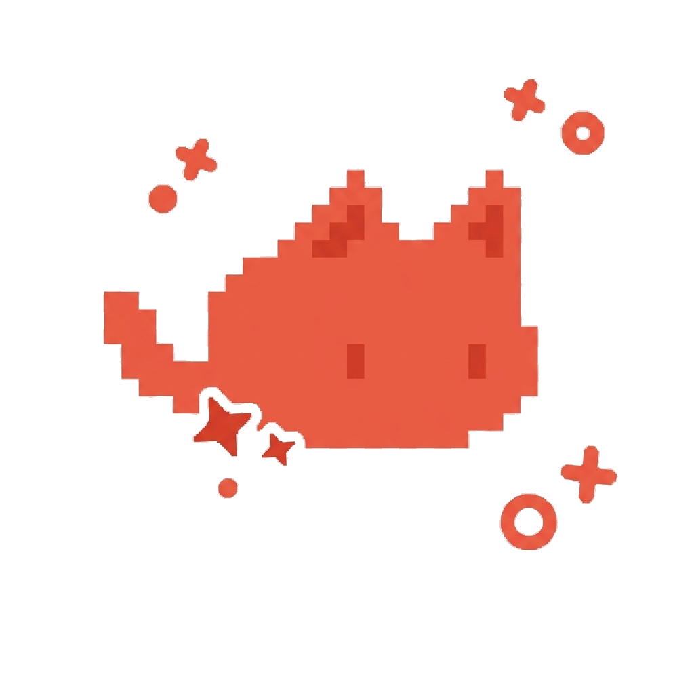

Personal Academic Blog
Hi, I'm EL
BS Information Technology|
Discover my journey in web development, UI design, and cybersecurity as I share what I learn, build, and explore in the world of technology.
01 01 010101 01 01 010101
010101 0101 01 01 01 01
01 01 010101 010101 010101 010101

Latest Post
Explore by Topic
Information Assurance
8 postsOrganizational Context
6 postsData Privacy
3 postsSecurity Principles
2 postsOthers
1 postAbout the Author
Get to know the creator behind EL Journal.

Ma. Elyssa Beda D. Contreras
BSIT 3rd Year Student • Father Saturnino Urios University
Hi! I'm a 3rd-year BSIT student at Father Saturnino Urios University who is passionate about designing and developing websites. Alongside web development, I aim to expand my knowledge of cybersecurity to better understand how to build secure and reliable applications.